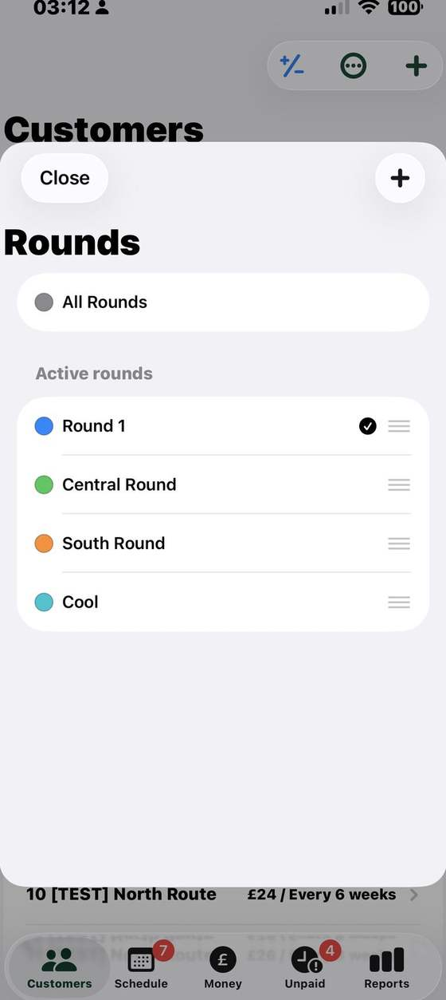
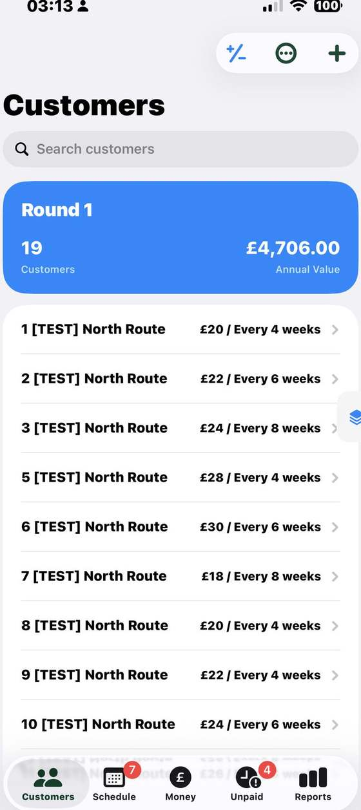
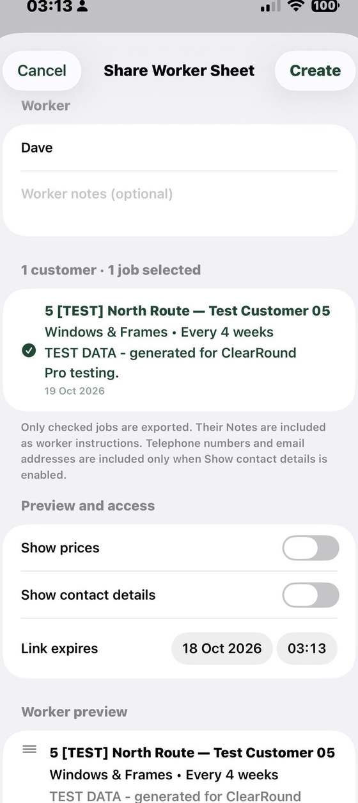
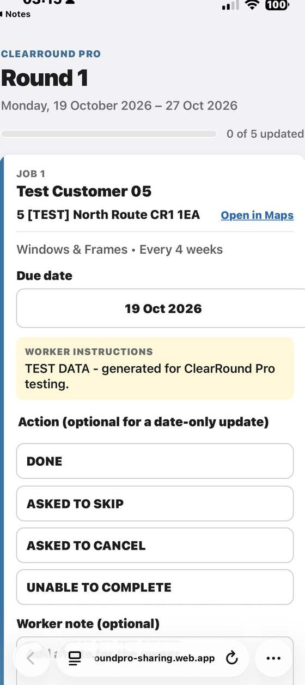

Customers and jobs
Keep addresses, contact details, notes and property photos alongside recurring or one-off jobs, prices and service frequencies.
ClearRound Pro gives you the simple ClearRound tools, with the extra room to manage multiple rounds and hand jobs to workers.
One clear price. No tiers or per-round charges. We’ll keep it at £8 a month.

Pro includes the everyday customer and business tools, then adds the round and worker features that growing businesses need.
Keep addresses, contact details, notes and property photos alongside recurring or one-off jobs, prices and service frequencies.
See what is due, overdue or coming up. Complete or postpone work and keep paid and outstanding jobs clear.
Record job income and business costs, keep an eye on money owed, and review performance over useful date ranges.
Build quotes using your own prices and quantities. Keep notes and customer details handy as you plan the work.
Use CSV tools to move your records and iCloud backup to help keep your app data available across compatible Apple devices.
Organise up to 10 named, colour-coded rounds. View one round at a time or see the combined work across your rounds.
Move a customer to a different round as your routes change. Their customer record and associated job and payment history move with them, so the records stay together.
Choose the jobs, add worker instructions and send a mobile-friendly sheet. Workers can report job outcomes without needing to use the full Pro app.
ClearRound Pro keeps the familiar customer, job and money tools, then adds practical multi-round organisation and a straightforward way to share work with workers.
| What you need | ClearRound | ClearRound Pro | Squeegee | CleanerPlanner | Aworka |
|---|---|---|---|---|---|
| Customer records and recurring work | Included | IncludedCustomers, regular jobs and one-off work | Included, with map-based job views | Included, with rounds/areas and bulk editing | Included, with regular work planning |
| Keep track of jobs and money | Due work, paid/owed status, income, expenses and reports | IncludedDue work, paid/owed status, income, expenses and reports | Invoices, payments, expenses and financial reporting | Debt tracking, payments, expenses and exports | Debts, invoices, expenses and financial summaries |
| Rounds and work allocation | One round | Up to 10 roundsMove customers between rounds with their job and payment history | Multiple rounds and team work assignment | Rounds/areas and moving work between them | Multi-user work allocation; round details vary |
| Worker handover | Not included | Shareable worker sheetsChoose jobs, add instructions and receive job updates | Team scheduling and assigned work | Employee worksheets and review tools | Multiple users can access allocated work |
| Beyond the essentials | Focused tools for one independent round | Focused multi-round essentialsCore tools, up to 10 rounds and practical worker sheets | Broader automation, messaging, payments and business tools | Broader team, worksheet and admin tools | Broader invoicing, online payments, VAT and team tools |
Feature summaries are based on each provider’s public product pages, checked 17 October 2026. Exact features can vary by plan and may change. See Squeegee, CleanerPlanner and Aworka for current details.
Name and colour your rounds so they’re easy to recognise. Open a round to see its customers and schedule, or use the combined view to plan across the business. If a customer belongs on a different route, move them and keep their existing customer, job and payment history together.

Create a worker sheet from selected jobs, add instructions and choose what information to share. Send the link so the worker can open the work on their phone.
Select the customers and jobs to include on that worker’s sheet.
Add notes for the worker and decide whether to show prices or customer contact details.
Choose when the link expires, then share it with the worker.
The worker can report a job as done, asked to skip, asked to cancel, or unable to complete.


A practical handover for the day’s work.
The sheet gives workers the job information you choose to share. They can report the result for each job; you continue to manage rounds and customer records in ClearRound Pro.
No package maze, no tiers, no per-round or per-worker fees. Just one simple monthly price, and we’ll keep it at £8 a month.
All Pro features included in one plan.
ClearRound Pro supports up to 10 named, colour-coded rounds. You can open a round on its own or see work across rounds together.
Yes. Move a customer to a different round when their route changes. Their customer record and associated job and payment history move with them.
A shareable mobile page containing the jobs you select for a worker. You can add instructions, choose whether to show prices or contact details, and set an expiry for the link. The worker can send a job status back.
No. The worker sheet opens from a link in a mobile browser; the worker does not need the full Pro app to see the jobs on that sheet.
Yes. Pro includes customer and job details, scheduling, income and expenses, money owed, reports, quotes, CSV tools and iCloud backup, as well as its multiple-round and worker sheet features.
Yes. ClearRound Pro has one plan at £8 a month. There are no per-round or per-worker charges, and we’ll keep the price at £8 a month.
Yes. If you run just one round and do not need worker sheets, ClearRound may suit you better.